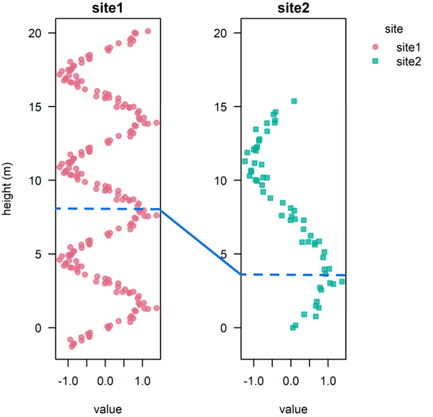
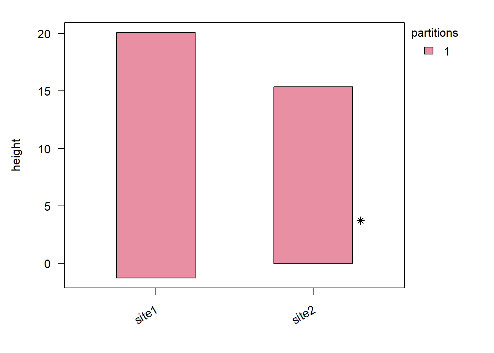

StratoBayes is an R package for correlating and dating geological data.
- Installation instructions and documentation: https://stratobayes.github.io/.
- Basic introduction to StratoBayes: StratoBayes vignette.
- Overview of available vignettes: Vignette index.
This guide explains how you can incorporate tie points in your analysis. Please send us an email or raise an issue on Github if you encounter any problems with the software or have suggestions on improving this documentation.
Tie points are stratigraphic horizons which are assumed to have the same age across two or more sites. We can declare tie points either by their height or depth in a chosen reference section, or by absolute age (age-scale alignment). In this example, we use a tie point expressed in height at the reference section:

Tie-point example. The tie will be speficied for site2, with a height corresponding to the position of the tie point at the reference site (site1).
We will be using the above data set, signalData5. An initial model run without using tie points (using stratData5a) shows that the signal of Site 2 could match any one of three distinct positions in the reference site (Site 1):
Now, we want to include a tie point. Assume we know that the positive peak of Site 2 at 3.7 m roughly corresponds to the second peak of the reference site (Site 1); this would be a height of 2.5 \(\pi \approx\) 7.85 m. To express our uncertainty on the exact horizon on the reference scale, we use a probability distribution rather than a single value. In this case, we use a normal distribution with mean \(\approx\) 7.85 m and a standard deviation of 1 m.
We can include this knowledge with a ties dataframe. Every row of the dataframe represents a tie point and needs a site and a height column. We also need to specify the mean and the standard deviation (sd) of the height at the reference site that corresponds to the height of the tie point.
Sometimes the normal distribution is not the best way to capture the uncertainty on a tie point. Instead, we can specify any R probability density in the ties dataframe. Instead of mean and sd, we can provide the name of a probability density function (e.g. "dnorm" for the normal distribution, "dunif" for the uniform distribution, …) and the numerical arguments that define the distribution, in the order they appear in. If we check ?dnorm, we see the arguments are x, mean, sd and log. The first formal argument of every density function (x) and the optional log argument are supplied automatically by the algorithm, so you should not include either of them. For the normal distribution arg1 corresponds to the mean, and arg2 to sd:
Probability distributions
The panels below shows two normal distributions (sd = 0.5 and sd = 1) and two gamma distributions (shape = 1, rate = 1 and shape = 3, rate = 1), illustrating how the choice of distribution changes the implied uncertainty. Tune the parameters – or swap in any R density function – to match your data. For a gamma-distributed tie point (densityFun = "dgamma"), arg1 would correspond to the shape, and arg2 to the rate parameter. The gamma distribution with shape = 1, rate = 1 is identical with an exponention distribution (dexp) with rate = 1.
StratoBayes does not allow for fixed tie points to be declared via the ties dataframe. However, a single fixed tie point per site can be specified via the \(\alpha\) parameters in the prior
(see ?StratModelTemplate and ?Priors).
Running a model with tie points
We can now create a StratData object using the signalData5 and the tiesData5 dataframes:
stratData5b <-StratData(signal = signalData5, ties = tiesData5, referenceSite ="site1")summary(stratData5b)## ## Stratigraphic data from 2 sites:## site1, site2## ## 1 signal: value## value:## Points per site: 201, 60## Signal spans: 21.4 m, 15.4 m## Signal top: 20.1 m, 15.4 m## Signal bottom: -1.3 m, 0 m## ## Partitions: 1## ## Ties (mean values): 7.85398163397448
The horizons with tie points can be visiualised by using the show = "partition" option from plot.StratData(), with asterisks indicating tie points:
plot(stratData5b, show ="partition")

We can now define the priors and model, and run the model, as usual. The tie point will be incorporated based on its presence in stratData.
# get min and max height of reference site for priorsite1Min <-min(signalData5$height[signalData5$site =="site1"])site1Max <-max(signalData5$height[signalData5$site =="site1"])# define priorstratPrior5 <-structure(list("alpha_site2"=UniformPrior(min = site1Min, max = site1Max),"gammaLog_site2"=NormalPrior(mean =0, sd =log(2))),class =c("StratPrior", "list"))# define modelstratModel5b <-StratModel(stratData = stratData5b,priors = stratPrior5,alignmentScale ="height",sedModel ="site",alphaPosition ="middle",nKnots =15,sigmaFixed = T)# run modelstratPosterior5b <-RunStratModel(stratObject = stratData5b,stratModel = stratModel5b,nRun =3,nIter =400,nThin =10,runParallel =TRUE)
Results
The model run now identified a single alignment solution, instead of three when the tie point was not incorporated:
We can use the StratMap() function to check how closely the reference height estimate of the tie point matches the specified normal distribution (with mean \(\approx 7.85\) m). The tie point height (at Site 2) was 3.72 m:
StratMap(stratPosterior5b, height =3.72, site =2)## height mean sd 2.5% 50% 97.5%## 1 3.72 7.817909 0.07107544 7.686489 7.816036 7.957598
The posterior mean estimate for the tie point 7.82 m is very close to the mean of the normal distribution. The standard deviation is much lower (0.07 m) than the standard deviation specified in the ties dataframe (1 m). We can interprete this to mean that the tie point has excluded the alternative alignments (top and bottom wiggle of of the sign wave of Site 1), but the exact position on the middle wiggle was specified by matching the signals (and not simply determined by the tie point).
Summary
Tie points allow for including geological information beyond the quantitative signals used for correlation, and can improve the alignment solution(s). A variety of probability distributions can be used to express the uncertainties around tie points; up to one fixed tie point per site can be included via the prior on the \(\alpha\) offset parameters.
Next steps
Partitioning data allows sedimentation rate changes and/or hiatuses, enabling more accurate correlations